01Perubahan Fisika
Mengembun
Gas → cair
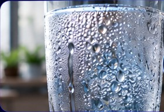
Siap diamatiUap air mendingin lalu menjadi titik-titik air.
Geser kartu ke samping, pilih simulasi, lalu tekan tombol untuk melihat gambaran perubahan zat. Animasi ini merupakan model sederhana untuk membantu memahami konsep, bukan percobaan laboratorium sungguhan.
Tidak menghasilkan zat baru; zat berubah wujud atau bentuk.
Gas → cair

Siap diamatiUap air mendingin lalu menjadi titik-titik air.
Cair → padat
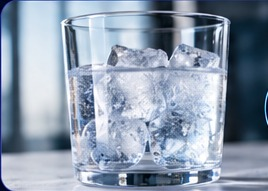
Siap diamatiCairan kehilangan kalor dan menjadi padat.
Gas → padat
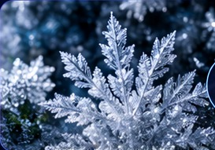
Siap diamatiGas berubah langsung menjadi padatan/kristal.
Cair → gas
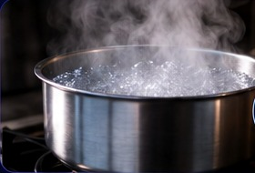
Siap diamatiPartikel cair memperoleh energi lalu menyebar menjadi gas.
Padat → cair
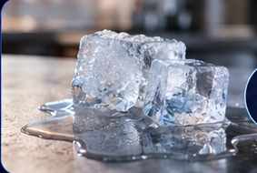
Siap diamatiPadatan menyerap kalor dan berubah menjadi cair.
Padat → gas
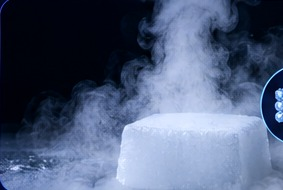
Siap diamatiPadatan berubah langsung menjadi gas tanpa menjadi cair.
Tip: di HP, geser kartu ke kiri atau kanan dengan jari.
Perubahan kimia menghasilkan zat baru dengan sifat berbeda.
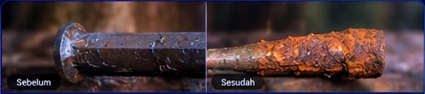
Sebelum → SesudahBesi bereaksi dengan oksigen dan air, membentuk karat berwarna cokelat kemerahan.
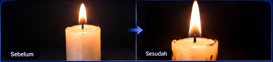
Sebelum → SesudahLilin meleleh adalah perubahan fisika, sedangkan pembakaran uap lilin menghasilkan zat baru.
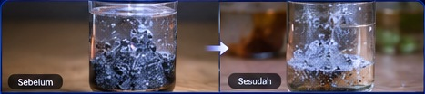
Sebelum → SesudahModel reaksi larutan menunjukkan terbentuknya gelembung gas sebagai salah satu tanda reaksi kimia.
Perubahan yang melibatkan organisme atau aktivitas biologis; dapat disertai reaksi kimia.
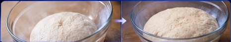
Sebelum → SesudahRagi sebagai mikroorganisme membantu menghasilkan gas yang membuat adonan mengembang.
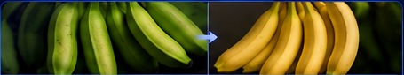
Sebelum → SesudahSelama pematangan, proses biologis mengubah warna, aroma, tekstur, dan rasa buah.
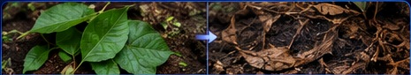
Sebelum → SesudahMikroorganisme menguraikan sisa makhluk hidup menjadi bahan lebih sederhana di lingkungan.